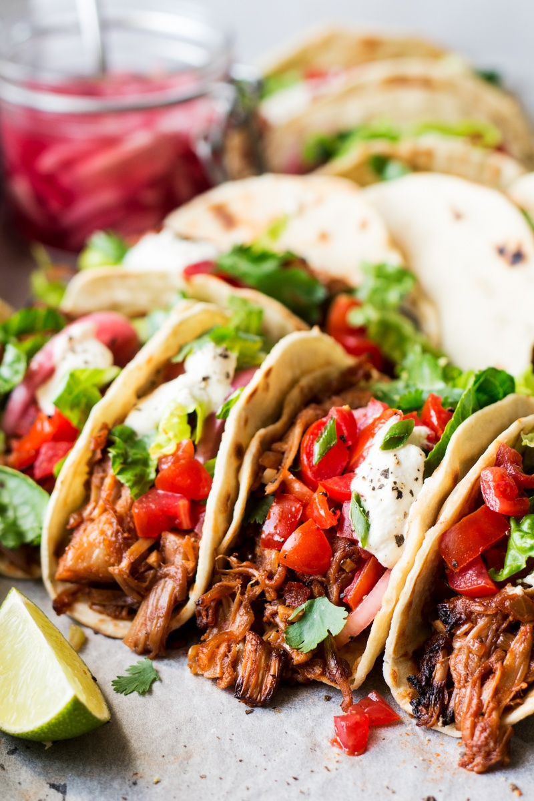

Jackfruit Tacos

Description
These are flavorful jackfruit tacos with a pulled-pork like texture. The jackfruit bursts with flavor, and these are quite some amazing tacos!
Ingredients
Pulled Jackfruit
- 4 tbsp olive oil
- 1 diced red onion
- 4 diced garlic cloves
- 1 tsp ground cumin
- 1 tsp smoked paprika
- 1 tsp ground coriander
- 1 pinch ground cinnamon
- 2-3 pinches ground cloves
- 2 tbsp tomato paste
- 2 20 oz tins of jackfruit
- 4 tbsp soy sauce
- 3 tbsp maple syrup
- 1/4 tsp pepper
- 1 tbsp apple cider vinegar
Other Ingredients
- mild tomato salsa
- 10x12cm soft taco shells
- shredded lettuce
- red onions
- sour cream
- coriander
Steps
- Drain both jackfruit tins. Cut the firm, pointy ends off each triangular piece of jackfruit (you can still use them if you wish, I don’t). Set aside.
- Heat up olive oil in a medium, heavy-bottomed, pan. Fry diced red onion until softened, translucent and lightly caramelized. Add chopped garlic and fry off gently until soft and fragrant
- Add most of the spices: cumin, smoked paprika, coriander, a pinch of cinnamon and cloves to the onion-garlic mixture. Fry them off gently, stirring the whole time, for a minute or so.
- Mix in the tomato paste
- Now add in the prepared jackfruit along with soy sauce, maple syrup and apple cider vinegar. Mix everything really well. Squash the jackfruit pieces with your mixing spoon so that the individual fibres separate more. Season with white pepper and another pinch of ground cloves if you wish. Simmer the mixture gently for another 10-15 minutes and then allow it to cool down. Place in the fridge overnight to intensify the flavour.
- Just before you are ready to assemble the tacos, set the oven to 200° C / 390° F (fan function). Spread the jackfruit pieces on a baking paper-lined baking tray and bake for about 20-25 minutes, until a little browned.
- Finally, assemble your tacos by putting pulled jackfruit, chopped lettuce, tomato salsa, pickled onions (if using) and coriander in the middle of each taco. Drizzle with sour cream.
Back to Home